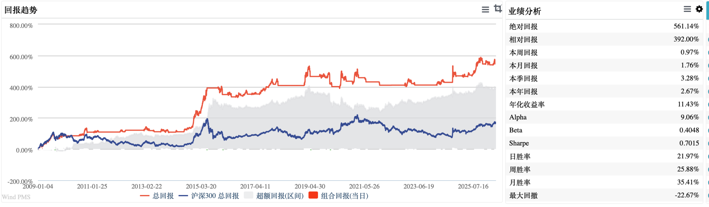
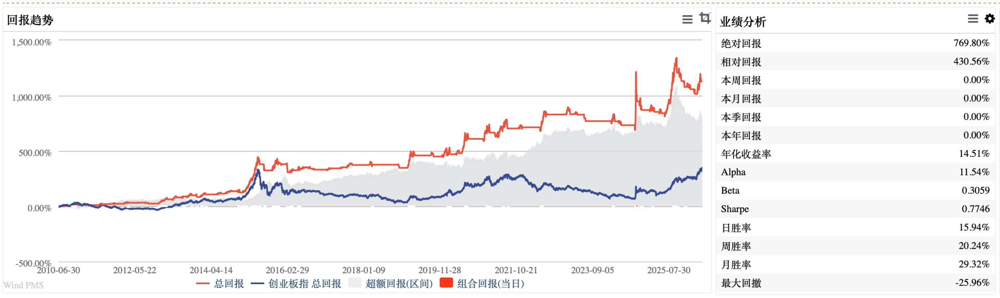

多头
对应市场进入相对更强的趋势，可以考虑买入或持有相关基金。
第一次看威尔多芬指标？
威尔多芬指标不是用来预测明天涨跌的，而是帮助我们看清市场大致处在什么温度：该积极一点，还是该稳一点。
核心理解
对应市场进入相对更强的趋势，可以考虑买入或持有相关基金。
趋势转弱，适合降低仓位，先把钱放到货币基金、中短债基金、活钱类理财等更稳的地方，等待下一次机会。
指标解决的是“什么时候更积极、什么时候更谨慎”的问题，不等于保证每次买卖都赚钱。
两个指标
主要观察大盘股机会，更偏向沪深300、上证50这类大盘蓝筹或价值风格资产。
主要观察小盘成长机会，更偏向创业板、中证500、中小成长风格资产。
过往表现
根据附件表格和本次更新的回测曲线，威尔、多芬两个指标的特点比较清楚：不是每一笔都赢，而是通过长期纪律，尽量做到“大赚小赔”。
| 指标 | 回测起点 | 交易次数 | 盈利次数 | 亏损次数 | 单次最大盈利 | 单次最大亏损 | 最新净值 | 年化收益率 | 最大回撤 |
|---|---|---|---|---|---|---|---|---|---|
| 威尔指标（大盘股） | 2009年以来 | 40次 | 23次 | 17次 | 65.92% | -7.06% | 8.4487 | 11.43% | -22.67% |
| 多芬指标（小盘股） | 2010年以来 | 61次 | 35次 | 26次 | 120.87% | -13.99% | 17.7876 | 14.51% | -25.96% |


历史数据不代表未来表现。年化收益率和最大回撤来自本次提供的回测曲线截图。
怎么操作
趋势刚转强，可以考虑买入对应基金。
趋势仍在，可以继续持有，也可以结合仓位小幅追加。
风险开始抬头，准备逐步降低仓位。
先卖出对应基金，转向活钱类、货币基金、中短债基金等，耐心等下一次信号。
如果不想每天盯盘，可以选择跟着信号走；如果已经有明显浮盈，也可以设置止盈止损线，先落袋一部分收益。但要接受一点：止盈可能帮你保住利润，也可能让你少赚后面的行情。
最后提醒
威尔多芬指标可以作为投资参考，但不要把它当成万能答案。市场永远有不确定性，指标也会有失灵的时候。
真正适合普通人的方法，是用指标判断市场温度，用配置控制仓位和风险，用长期纪律对抗情绪。账户里可以有股、有债、有黄金，也可以适当有海外资产；乱纪元市场里，配置比单点判断更重要。
本页面内容仅为投资者教育与策略观察，不构成具体投资建议。基金、理财等产品过往业绩不代表未来表现，投资需结合自身风险承受能力、投资期限和资金用途。